Every Claude Code session on this Mac (and the paired one) as a living solar system: what each object means, and everything you can do with it.
Each picture is drawn by the app itself. Hover the mesh to find them; most of them react to the pointer.
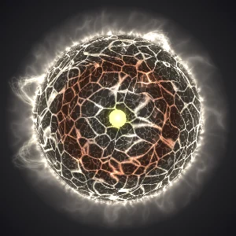
The centre of the system: your Claude plan. Its layers age like a real star as usage is spent. The white-hot core is the all-models weekly limit, the body is the 5-hour session limit and the rim is the current model's weekly limit. Each goes from bright white to vivid red as it runs out.
The flares and waves count down to the session reset: light blue, then magenta, then vivid red over the last 4 hours. The usage card underneath shows the numbers.
Click it to broadcast a message to several sessions at once.
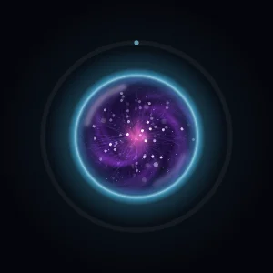
One Claude Code session. Its colour shows the model: Opus is a cyan rim around a violet nebula.
Size grows with total spend. Spin speeds up with the token burn. Brightness follows how recently and how often it runs. It darkens as today's spend grows.
Click to open it · right-click for commands · drag to give it its own orbit.
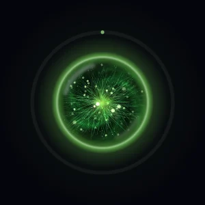
A lime rim around a fibrous green nebula.
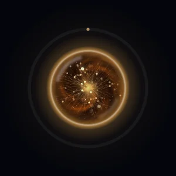
An amber rim around an orange nebula.
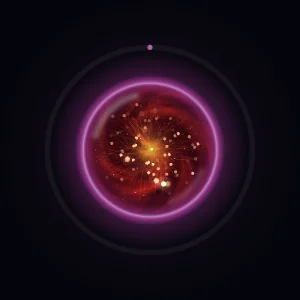
A magenta rim around a red, flame-like nebula.
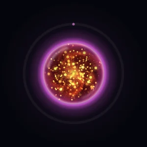
A session that works with the 24/7 server: thick violet glass and a dense swarm of golden sparks.
The session panel's Colour picker can give any bubble one of five other colours (Aurora, Nebula, Solar, Rose, Glacier).
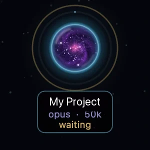
Under each bubble: its name, model, tokens today and its state. working · waiting for you / silent mid-task · errors (the rim turns red too) · idle.
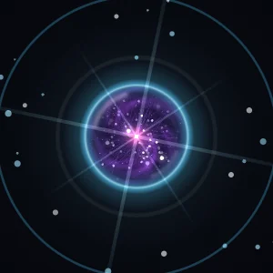
When a session finishes its prompt it flares like a new star: a white-hot flash, a shockwave ring, light rays and sparks in its own colour (about 3 seconds).
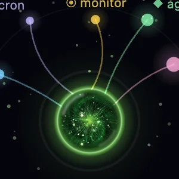
What a session has running for it, as tendrils over the top: loops · cron jobs · monitors · sub-agents · skills.
A root is fully lit while active and fades over about 30 minutes without activity. Hover a bubble to read their names.
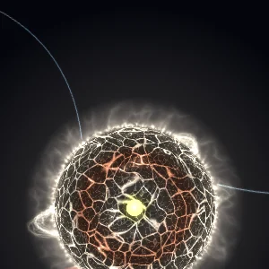
Token streams. While a session works, a bundle of strands runs from it to the star. More and thicker strands mean a heavier load, and the colour runs from blue through yellow and orange to red as it works harder.
Window ▸ Lines to the mother star hides the resting lines; the strand bundles of sessions burning tokens still show.
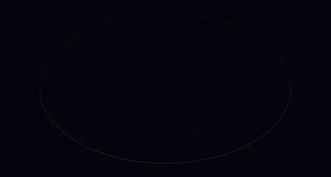
The plane the sessions orbit in, seen tilted. Its far half passes behind the star and its near half in front.
Window ▸ Orbit lines hides it, along with the hand-placed orbits and the trails.
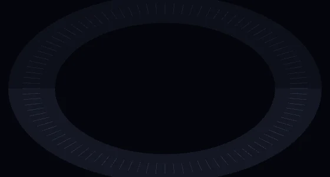
The grab zone around the ring, with ticks that turn as the system spins.
Drag along it sideways to spin the whole system (flick it to let it coast). Drag up or down to tilt it up to ±15°. Everything rides the turn and the tilt: the bubbles, the groups, the probe, and the Endurance and the black hole, which are bodies out in the orbit plane. They swing round to the far side, smaller and behind the star, and back to the near side, bigger and in front. Window ▸ Orbit control disk hides it; spinning still works.
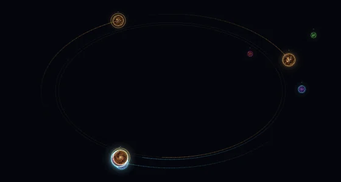
A fading trail behind each session in its own colour, showing where and which way it goes. A session you placed by hand also shows its own orbit ellipse.
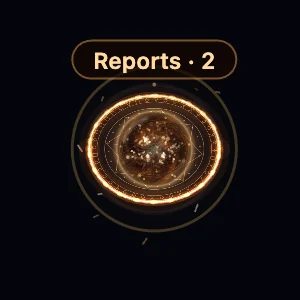
A session group: a burning sling-ring portal with sigils turning behind it. Its sessions ride the ring as small satellites around the group's own main bubble.
Click the main bubble to open or close the group · drag it to move the whole group.
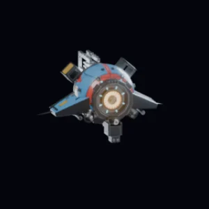
Patrols the system: rides the orbit, roams, and every few minutes hovers over a bubble and scans it with a tractor beam, then reports what it found. It's an ex-con working off his time as the Mesh probe, and he talks like it. More ›
Hover to stop it · click for its commands.
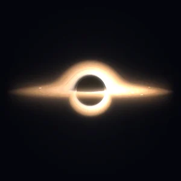
The bin, ray-traced live like Gargantua: light bends round the hole, so you see the far side of the disk over the top and its underside as a ring below.
Drop a session on it to end it (/exit) · drag to move it · ⌘-drag to turn it any way round.
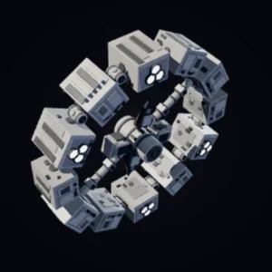
The probe's home, a ring station modelled in 3-D with real self-shadowing. It spins and slowly swings through every angle. The probe docks on its hub to sleep when nothing has worked for 5 minutes.
Drag to move it · ⌘-drag to turn it.
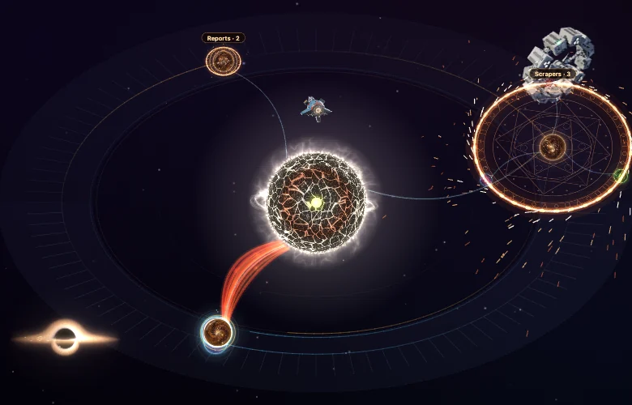
All of it together. The map reaches half a window past every edge, so zoom out to see objects you've moved off-screen.
Hold Shift and scroll over an object to resize it. Scroll up to grow it; a tip shows the size. Over empty space, Shift-scroll still zooms.
| Object | Size range | Move | Turn |
|---|---|---|---|
| Mother star | 60–300% (never past 42% of the window; the bubbles keep their size; a bigger star pulls harder) | · | · |
| Session bubble | 50–200%, each its own | drag (its orbit) | ⌘-drag tilts its orbit |
| Probe | 50–220% | Stay here (menu) | · |
| Black hole | 50–300% (a bigger hole pulls harder) | drag | ⌘-drag, any way round |
| Endurance | 50–220% | drag | ⌘-drag, any way round |
Sizes and spots are kept per Mac. Window ▸ Reset sizes & positions puts everything back.
/exit is sent once the bubble is fully torn apart. Until then, Undo under the hole pulls it back out.| Keys & gestures | |
|---|---|
| ⌘0 ⌘1 ⌘2 ⌘3 | sidebar · Mesh · Split · Grid |
| ⌘P | Simple mode |
| Shift + scroll | resize the object under the pointer |
| ⌘ + drag | tilt an orbit · turn the Endurance or the black hole |
| double-click | reset the view · a bubble back to its automatic orbit |
| Esc | close the probe's menu |